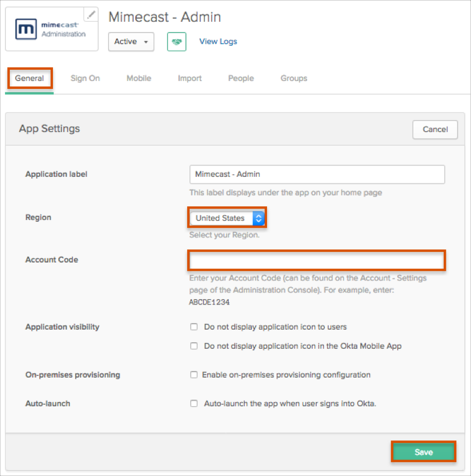
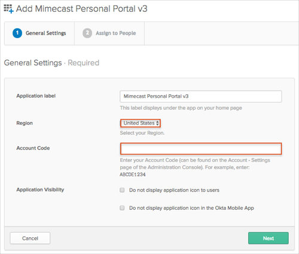

Notes:
Mimecast supports both SP- and IdP-initiated SAML and deep links. The username must be the email address that is used to sign into Mimecast. If this email address in not the same as the Okta username, please update the Default username format value in Okta accordingly.
Instructions for Administration Console Updates and Personal Portal Updates are provided at the end of this document.
You can either enter information manually, or you can use the Metadata URL import option. To import, specify the Metadata URL on the Authentication Profile and then select the Import option. Your metadata URL is:
Sign into the Okta Admin dashboard to generate this value.
Enter the following Issuer URL.
Sign in to the Okta Admin app to generate this variable.Enter the following Login URL.
Sign in to the Okta Admin app to generate this variable.Enter the following Logout URL.
Sign in to the Okta Admin app to generate this variable.Enter the following Identity Provider Certificate (Metadata).
Sign in to the Okta Admin app to generate this variable.
After saving your configuration in Mimecast, it can take up to 15 minutes before it is effective.
Done!
Administration Console version 3 support will stop on September 6, 2016. The Administration Console version 4 will be hosted behind new URLs. You need to perform the following actions in order to use Administration Console version 4.
Important: You do not need to make any changes in the SAML settings on the Mimecast Administration Console side.
In Okta, select the General tab for the Mimecast - Admin app, then select Edit.
Select your Mimecast Region from the drop down menu.
Enter your Account Code (this can be found on the Account > Settings page of the Administration Console).
Click Save.

Mimecast Personal Portal version 3 is already available for customers. In order to use Mimecast Personal Portal version 3, first add Mimecast Personal Portal v3 application in Okta, then:
Select the General tab for the Mimecast - Personal Portal v3 app, then select Edit.
Select your Mimecast Region from the drop down menu.
Enter your Account Code (this can be found on the Account > Settings page of the Administration Console).
Click Save.
